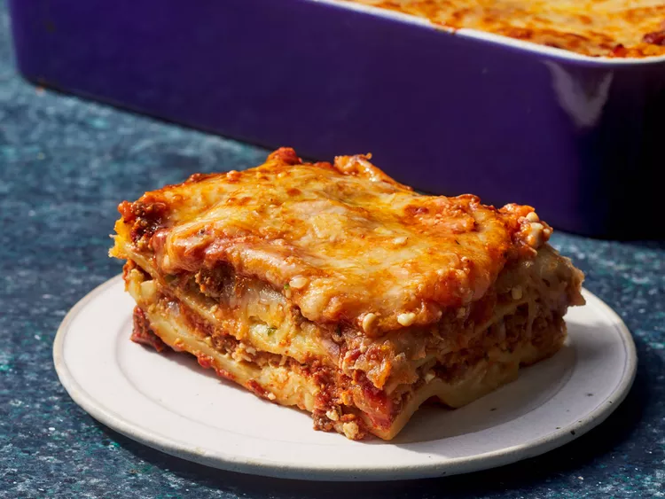

Homemade Lasagna

Description
Lasagna is a classic Italian dish made with layers of pasta, meat, cheese, and sauce. It's a hearty and comforting meal that's perfect for family gatherings or special occasions.
Ingredients
- 12 lasagna noodles
- 1 pound ground beef
- 2 cups ricotta cheese
- 2 cups shredded mozzarella cheese
- 1 cup grated Parmesan cheese
- 2 cups marinara sauce
- 1 egg
- 1 teaspoon Italian seasoning
- Salt and pepper to taste
- Fresh basil for garnish (optional)
Steps
- Preheat the oven to 375°F (190°C).
- Cook the lasagna noodles according to package instructions. Drain and set aside.
- In a skillet, brown the ground beef over medium heat. Drain excess fat.
- In a bowl, mix ricotta cheese, egg, Italian seasoning, salt, and pepper.
- Spread a thin layer of marinara sauce on the bottom of a baking dish.
- Layer 4 lasagna noodles, half of the ricotta mixture, half of the ground beef, and a third of the mozzarella cheese. Repeat layers.
- Top with remaining noodles, marinara sauce, and mozzarella cheese. Sprinkle Parmesan cheese on top.
- Cover with foil and bake for 25 minutes. Remove foil and bake for an additional 15 minutes or until cheese is bubbly and golden.
- Let it cool for 10 minutes before serving. Garnish with fresh basil if desired.
Home